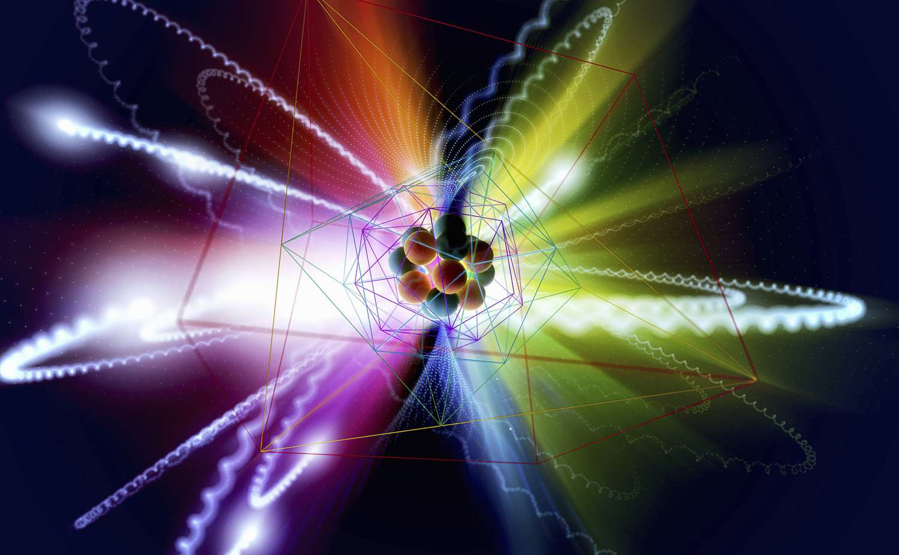
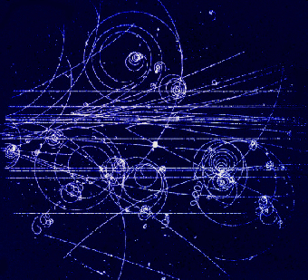

Particle physics is a branch of physics that studies the fundamental particles and forces that constitute matter and radiation. These particles are extremely small pieces that build up the world around us. They are best described in the language of math: calculus, the imaginary number, and group theory (which describes symmetry). The field also studies combinations of elementary particles up to the scale of protons and neutrons, while the study of combination of protons and neutrons is called nuclear physics.
The idea that all matter is fundamentally composed of elementary particles dates from at least the 6th century BC. [1] In the 19th century, John Dalton, through his work on stoichiometry, concluded that each element of nature was composed of a single, unique type of particle.[2] The word atom, after the Greek word atomos meaning "indivisible", has since then denoted the smallest particle of a chemical element, but physicists later discovered that atoms are not, in fact, the fundamental particles of nature, but are conglomerates of even smaller particles, such as the electron. The early 20th century explorations of nuclear physics and quantum physics led to proofs of nuclear fission in 1939 by Lise Meitner (based on experiments by Otto Hahn), and nuclear fusion by Hans Bethe in that same year; both discoveries also led to the development of nuclear weapons.
Throughout the 1950s and 1960s, a bewildering variety of particles was found in collisions of particles from beams of increasingly high energy. It was referred to informally as the "particle zoo". Important discoveries such as the CP violation by James Cronin and Val Fitch brought new questions to matter-antimatter imbalance.[3] After the formulation of the Standard Model during the 1970s, physicists clarified the origin of the particle zoo. The large number of particles was explained as combinations of a (relatively) small number of more fundamental particles and framed in the context of quantum field theories. This reclassification marked the beginning of modern particle physics.[4][5]